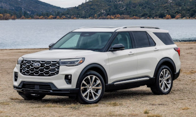

FORD FUNDAÇÃO
A Ford é uma das montadoras de automóveis mais conhecidas do mundo. Fundada pelo americano Henry Ford, a empresa mudou a indústria automobilística e fabricou alguns dos modelos mais conhecidos da história. Atualmente os carros da empresa continuam sendo muito procurados em todo o mundo, e o Brasil não é exceção. Todo o esforço de expansão da empresa fez com que o nome Ford fosse conhecido no mundo todo e que por muito tempo a marca fosse a mais valiosa do ramo. Com modelos icônicos e uma história muito rica, a montadora é bem mais do que uma simples fabricante de carros. Saiba mais em https://www.karvi.com.br/blog/conheca-a-historia-da-ford/
FORD EXPLORER
O Ford Explorer é um dos SUVs mais icônicos da história automobilística, tendo sido lançado pela primeira vez em 1990. Desde então, ele passou por diversas transformações, tanto em design quanto em tecnologia e desempenho. O modelo foi projetado para atender a uma demanda crescente por veículos que combinassem espaço, conforto e capacidade off-road. Ao longo dos anos, o Explorer se tornou sinônimo de aventura e versatilidade, conquistando uma base fiel de consumidores. O primeiro modelo do Ford Explorer foi baseado na plataforma do Ford Ranger, um caminhão compacto, e oferecia uma combinação de características que o tornaram popular rapidamente. Com um motor V6 de 4.0 litros, o Explorer original entregava uma potência de 155 cv, o que era bastante respeitável para a época. Além disso, o consumo médio girava em torno de 8 km/l na cidade e 10 km/l na estrada, um número que, embora não impressione nos dias de hoje, era aceitável para um SUV na década de 90. Com o passar dos anos, o Ford Explorer evoluiu significativamente. A segunda geração, lançada em 1995, trouxe um design mais robusto e opções de motorização mais potentes, incluindo um V8 de 5.0 litros. A terceira geração, que chegou em 2002, introduziu uma nova plataforma e melhorias em segurança, como airbags laterais e controle de tração. A cada nova geração, o Explorer se adaptou às necessidades do mercado, incorporando tecnologias modernas e aumentando seu apelo entre os consumidores.
FORD F-150

Não dá para passar despercebido com um Ford F-150. "Durante uma semana de utilização, rodei com a picape F-150 Platinum, top de linha, com a sensação de que era visto não só como o próprio “rei do gado”, mas também como “rei da estrada”. Já era para os brasileiros estarem ascostumados, afinal o país tem sido “invadido” pelas grandes picapes americanas desde 2020, com a chegada do Ram 1500 Rebel. A partir daí foi uma febre e, por óbvio, a Ford rapidamente trouxe dois exemplares do modelo mais vendido do mundo: F-150 Lariat de R$ 480 mil e F-150 Platinum de R$ 520 mil. É mais correto chamar o Ford F-150 de caminhonete do que de picape, pois trata-se mesmo de um pequeno caminhão. Mas, por outro lado, o conforto, a vida a bordo e o status são de carros aspiracionais do mercado de luxo. Não por pouco. O Ford F-150 tem um design elegante e imponente, com a frente robusta e nenhuma economia na assinatura de LED, uma cabine gigante com o único logotipo cromado da marca (nos outros carros é azul) e até o nome na tampa traseira escrito em cromo acetinado. A vida a bordo é excelente pelo amplo espaço, uma infinidade de espaço para guardar ou esquecer coisas, duas enormes telas de 12 no painel, multimídia Sync 4 nota 10, carregador de celular por indução, teto solar panorâmico e sistema de som Bang & Olufsen, como das marcas premium, além de bancos elétricos com memória de 10 posições para motorista e de 8 posições para o passageiro.
FORD FIESTA RS

Lançado no Brasil em 2010, a nova geração do Ford Fiesta teve uma boa aceitação dos consumidores e trouxe o esperado fôlego que o modelo necessitava. Com linhas modernas e interior arrojado, o veículo ganhou fãs por todo o País. Ao longo da década, a concorrência ficou acirrada e o novo posicionamento de mercado da montadora fez com que o Ford Fiesta deixasse de ser fabricado em 2019. Contudo, o modelo tem muitos pontos positivos, que podem ser conhecidos a seguir.
FORD FOCUS RS

O Ford Focus RS é uma referência incontestável quando se trata de carros esportivos de alto desempenho. Este “hot-hatch” conquistou uma legião de fãs ao longo dos anos, com uma história repleta de emoção e inovação. Neste artigo mergulharemos no mundo do Ford Focus RS, explorando sua trajetória desde as origens da sigla RS até os modelos icônicos e seu atual status no mercado automobilístico. A sigla RS, que significa “Rally Sport,” é a pedra fundamental que sustenta a reputação de carros de alto desempenho da Ford. Essa designação foi originalmente criada para representar veículos destinados a competições de rally, onde a Ford sempre se destacou. A série RS da Ford teve início em 1970 com o lendário Escort RS1600, marcando o início de uma jornada emocionante. Embora tenha incluído modelos notáveis como o Capri, o Sierra e o RS200 Group B, foi o Escort RS que deixou sua marca indelével. O desenvolvimento do Ford Focus RS foi uma tarefa monumental, realizada por uma equipe de 60 engenheiros da Ford e da Tickford Engineering. Para garantir o desempenho excepcional do veículo, a Ford colaborou com fornecedores de alta qualidade, como Quaife, Garrett, Brembo e Sparco. O carro foi mostrado como pré-produção em 2000 e lançado em 2002, um ano e meio depois do planejado. A produção ocorreu na Alemanha e foi limitada a apenas 4.501 unidades, o que contribuiu para sua exclusividade.
FORD MUSTANG GT

O Ford Mustang é um automóvel desportivo produzido pela Ford Motor Company. O carro foi apresentado ao público em 17 de abril de 1964 durante a New York World's Fair. O Mustang, apesar de ter sofrido grandes alterações ao longo dos anos é a mais antiga linha de automóveis da Ford, cujo nome se inspira na única raça de cavalo selvagem do país. Foi o primeiro "Muscle Car" da história, sendo seguido anos mais tarde por modelos concorrentes inspirados claramente nele.